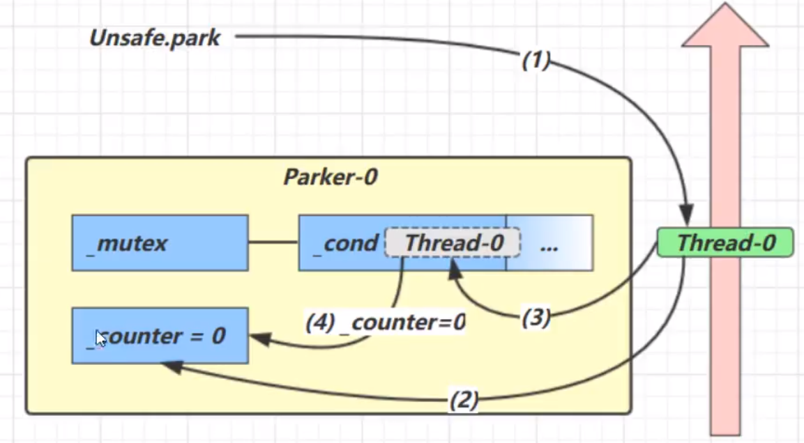
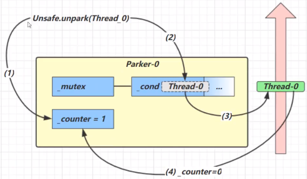
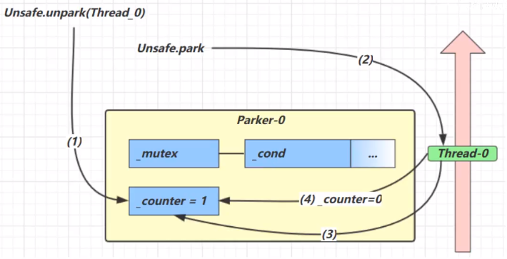
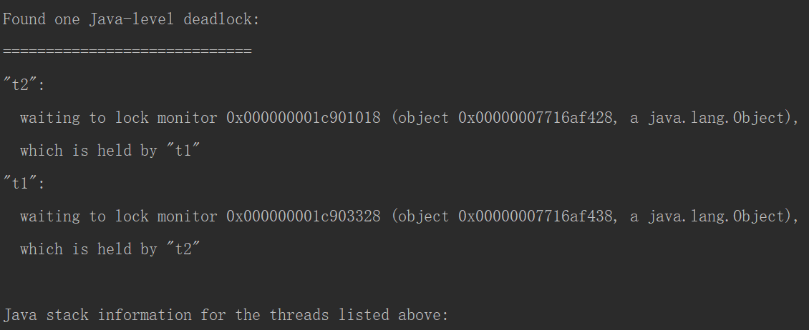

多线程编程
7 Park & Unpark
LockSupport 类中的方法
暂停当前线程
1
LockSupport.park();
恢复某个线程的运行
1
LockSupport.unpark(暂停线程对象)
7.1 Park & Unpark VS Object的wait & notify相比
wait,notify和notifyAll必须配合Object Monitor一起使用，而unpark不必park&unpark是以线程为单位来[阻塞]和[唤醒]线程，而notify只能随机唤醒一个等待线程,notifyAll是唤醒所有等待线程，就不那么[精确]park&unpark可以先unpark,而wait¬ify不能先notify
1 | public static void main(String[] args) { |
7.2park & unpark 原理
每个线程都有自己的一个
Parker对象，底层由C实现的，有三部分组成_counter,_cond和_mutex- 线程就像一个旅人，Parker就像他随身携带的背包，条件变量就好比背包中的帐篷。
_counter就好比背包中的备用干粮(0 为耗尽，1为充足) - 调用park就是要看需不需要停下来歇息
- 如果备用干粮耗尽， 那么钻进帐篷歇息
- 如果备用干粮充足，那么不需停留，继续前进
- 调用unpark,就好比补充干粮
- 如果这时线程还在帐篷，就唤醒上他继续前进
- 如果这时线程还在运行，那么下次他调用park时，仅是消耗掉备用干粮，不需停留继续前进
- 因为背包空间有限，多次调用
unpark仅会补充一份备用干粮
- 线程就像一个旅人，Parker就像他随身携带的背包，条件变量就好比背包中的帐篷。
调用park方法
当前线程调用Unsafe.park()方法
检查
_counter，本情况为0，这时获得_mutex互斥锁对象线程进入，
_cond条件变量阻塞设置
_counter= 0
调用unpark方法
调用Unsafe.unpark(
Thread_0) 方法，设置_counter为1唤醒
_cond条件变量中的Thread_0Thread_0恢复运行设置
_counter为0
先Unpark 在Park
调用
Unsafe.unpark(Thread_0)方法，设置_counter为1当前线程调用
Unsafe.park()方法检查
_counter，本情况为1,这时线程无需阻塞，继续运行设置
_counter为0
8 将锁的粒度细分
- 好处，是可以增强并发度
- 坏处，如果一个线程需要同时获得多把锁，就容易发生死锁
8.1 死锁
有这样的情况：一个线程需要同时获取多把锁，这时就容易发生死锁
- t1 线程 获得 A对象 锁，接下来想获取 B对象 的锁
- t2 线程 获得 B对象 锁，接下来想获取 A对象 的锁
1
2
3
4
5
6
7
8
9
10
11
12
13
14
15
16
17
18
19
20
21
22public static void main(String[] args) {
private final Object lock1 = new Object();
private final Object lock2 = new Object();
new Thread(()->
{
synchronized (lock1)
{
Sleeper.sleep(2);
synchronized (lock2){}
}
},"t1").start();
new Thread(()->
{
synchronized (lock2)
{
Sleeper.sleep(2);
synchronized (lock1) {}
}
},"t2").start();
}
定位死锁
使用
jps定位进程 id，再用jstack id定位死锁
jconsole
哲学家就餐问题
1 | 4j(topic = "MultiThread") |
8.2活锁
- 活锁出现在两个线程互相改变对方的结束条件，最后谁也无法结束
1 | static volatile int count = 10; |
8.3 饥饿
一个线程由于优先级太低，始终得不到 CPU 调度执行，也不能够结束
饥饿的情况不易演示，读写锁会涉及饥饿问题
- 哲学家就餐问题中，如果修改最后一位哲学家的筷子顺序，可以避免死锁，但是可能导致饥饿
9 Lock接口
java.util.concurrent.locks.Lock机制提供了比synchronized代码块和synchronized方法更广泛的锁定操作,同步代码块/同步方法具有的功能Lock都有,除此之外更强大,更体现面向对象。
Lock锁也称同步锁，加锁与释放锁方法化了，如下：
public void lock():加同步锁。public void unlock():释放同步锁。
每个Java对象都可以用作一个实现同步的锁，成为内置锁（Intrinsic Lock）或监视器锁（Monitor Lock）
使用ReentrantLock子类
1 | public class ReentrantLock implements Lock, java.io.Serializable |
相对于synchronizdd它具备如下特点
- 可中断等待线程的等待
- 可以设置超时时间
- 可以设置为公平锁（先到先到）
- 支持多个条件变量【waitSet】等待
与synchronized一样，都支持可重入
基本语法
1
2
3
4
5
6
7
8
9private final ReentrantLock lock = new ReentrantLock();
public void m(){
lock.lock();
try {
//保证线程安全的代码
}finally {
lock.unlock();
}
}
9.1 可重入
- 可重入是指同一个线程如果首次获得了这把锁，那么因为它是这把锁的拥有者，因此有权利再次获取这把锁
- 如果是不可重入锁，那么第二次获得锁时，自己也会被锁挡住
1 | public class MultiThread { |
9.2可中断等待线程的等待
在等待锁的过程中，是否可以终止线程等待的过程
synchronized和lock都是不可打断的，别的线程持有了锁头，等待线程就需要一直等待下去。lock.lockInterruptibly();防止无限制的等待下去
1
2
3
4
5
6
7
8
9
10
11
12
13
14
15
16
17
18
19
20
21
22
23
24
25
26
27
28
29
30
31private static ReentrantLock lock = new ReentrantLock();
public static void main(String[] args) {
Thread t1 = new Thread(()->
{
log.debug("try to get lock");
try {
lock.lockInterruptibly();
} catch (InterruptedException e) {
e.printStackTrace();
log.debug("not wait anymore, be interrupted");
return; // 如果没有获得锁 则结束
}
try{
log.debug("get lock");
}finally {
lock.unlock();
}
},"t1");
lock.lock();
t1.start();
Sleeper.sleep(4);
t1.interrupt();
lock.unlock();
}
/*
09:14:48.782 [t1] MultiThread - try to get lock
java.lang.InterruptedException
... at...top.carpenter.MultiThread.lambda$main$0(MultiThread.java:19)
at java.lang.Thread.run(Thread.java:748)
09:14:52.782 [t1] MultiThread - not wait anymore, be interrupted
*/
9.3锁超时
public boolean tryLock()——立即尝试锁定【不支持打断】lock.tryLock(2, TimeUnit.SECONDS)——在时间内都在尝试获得锁【支持打断】1
2
3
4
5
6
7
8
9
10
11
12
13
14
15
16
17
18
19
20
21
22
23
24
25private static ReentrantLock lock = new ReentrantLock();
public static void main(String[] args) {
Thread t1 = new Thread(()->
{
try {
if(!lock.tryLock(2, TimeUnit.SECONDS))
{
log.debug("超时，获取不到锁");return;
}
} catch (InterruptedException e) {
e.printStackTrace();
log.debug("被打断，获取不到锁");
return;
}
try{
log.debug("获取锁");
}finally {
lock.unlock();
}
},"t1");
lock.lock();
t1.start();
Sleeper.sleep(1);
lock.unlock();
}
解决哲学家就餐问题
1 | 4j(topic = "MultiThread") |
9.4公平锁
1 | private final ReentrantLock lock = new ReentrantLock(false);//非公平锁 entryList中线程随机获得锁【默认】 |
公平锁一般没有必要，会降低并发度，后面分析原理时会讲解
9.5支持多个条件变量等待(waitSet)
synchronized中也有条件变量，就是我们讲原理时那个waitSet休息室，当条件不满足时进入waitSet等待
ReentrantLock的条件变量比synchronized强大之处在于，它是支持多个条件变量的
- synchronized 是那些不满足条件的线程都在一间休息室等消息
- ReentrantLock支持多间休息室，有专门门等烟的休息室、专门等早餐的休息室、唤醒时也是按休息室来唤醒
Lock接口方法：Condition的作用是对锁进行更精确的控制【”互斥锁”/”共享锁”捆绑使用】
1
2private Condition producer = lock.newCondition();
private Condition consumer = lock.newCondition();Condition中的await()方法相当于Object的wait()方法
1
producer.await()
Condition中的signal()方法相当于Object的notify()方法
1
producer.signal()
Condition中的signalAll()相当于Object的notifyAll()方法。
1
producer.signalAll()
使用流程
- await前需要获得锁【与wait用法相同】
- await执行后，会释放锁，进入conditionObject等待
- await 的线程被唤醒(或打断、或超时)取重新竞争lock锁
- 竞争lock锁成功后,从await后继续执行
1 | import java.util.LinkedList; |
9.6 同步模式之顺序控制
9.6.1固定运行顺序
- 例题：必须先 2 后 1 打印
wait notify
1 | 4j(topic = "MultiThread") |
await signal
1 | 4j(topic = "MultiThread") |
park unpark
1 | 4j(topic = "MultiThread") |
9.6.2交替运行
引例：线程 1 输出 1 5 次，线程 2 输出 2 5 次。现在要求输出 1212121212 怎么实现
1
2
3
4
5
6
7
8
9
10
11
12
13
14
15
16
17
18
19
20
21
22
23
24
25
26
27
28
29
30
31
32
33
34
35
36
37
38
39
40
41
42static ReentrantLock lock = new ReentrantLock();
static Condition condition = lock.newCondition();
static Boolean t1Finish = false;
public static void main(String[] args) throws InterruptedException {
new Thread(()->{
for (int i = 0; i < 5; i++) {
lock.lock();
try {
while (t1Finish){
condition.await();
}
System.out.println(1);
t1Finish = true;
condition.signal();
} catch (InterruptedException e) {
e.printStackTrace();
} finally {
lock.unlock();
}
}
},"t1").start();
new Thread(()->{
for (int i = 0; i < 5; i++) {
lock.lock();
try {
while (!t1Finish){
condition.await();
}
System.out.println(2);
t1Finish = false;
condition.signal();
} catch (InterruptedException e) {
e.printStackTrace();
} finally {
lock.unlock();
}
}
},"t2").start();
}线程 1 输出 a 5 次，线程 2 输出 b 5 次，线程 3 输出 c 5 次。现在要求输出 abcabcabcabcabc 怎么实现
wait
1 | 4j(topic = "MultiThread") |
await
- 上面的模式可以套用，此处使用新的方式
1 | 4j(topic = "MultiThread") |
没有使用while的虚假唤醒
park
1 | 4j(topic = "MultiThread") |
9.7 Synchronized 与 Lock 对比
- Lock只有代码块锁 Synchronized有代码块锁和方法锁
- Lock是显示锁 手动开启关闭 Synchronized是隐式锁 出了作用域自动释放
- 使用Lock锁，JVM将花费较少的时间来调度线程，性能更好。并且具有更好的扩展性（提供更多的子类）
- Lock可以进行尝试锁定，无论是否锁定方法都将继续执行
1 | Lock lock = new ReentrantLock(); |
- 使用顺序【细粒度】
- Lock > 方法代码块 > 同步方法
原文作者: 掘金木匠
原文链接: http://goldcarpenter.github.io/2019/04/30/多线程_Part5/
版权声明: 转载请注明出处(必须保留作者署名及链接)